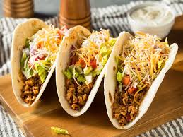

Terrific Tacos!

These delicious tacos will have you partying every tuesday. Nice crispy hardshells with juicy
beef and amazing toppings will be the highlight of your week!
These tacos are a family recipe of mine. Ive been making these tacos since I was 14 years old! My mom first tought me how to cook them
on a pan, and as I got more skilled, I slowly transition to using many more advanced methods of cooking. Soon I was cooking up birria and Molè, and eventually baking my own sweet bread. But thats a story for another day.
Now for the tacos!
Ingredients:
- Hardshells
- Ground Beef
- Refried Beans
- Taco Seasoning
Optional:
- Shredded Cheese
- Sour Cream
- Diced Tomatos
- Lettuce
- Avocado/Guacamole
Instructions
- Cook Ground beef in a pan until browned, and then add taco seasoning.
- While beef is browning, put refried beans in a pot and heat until creamy.
- Once beef is down browning anf beans are ready, apply a small layer of beans in the hardshell.
- Add a layer of beef on top of the beans.
- Add optional toppings to your liking, such as cheese, lettuce, sour cream etc.